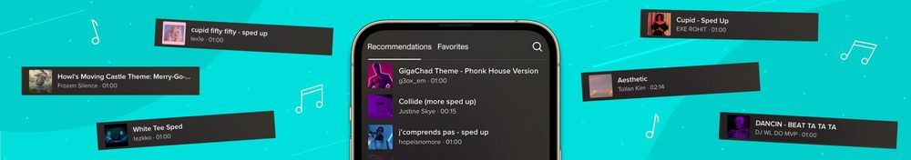

How to make a TikTok
It’s time to unleash your creativity on TikTok! Creating
TikTok videos is super simple, but there are things
you’ll want to check off if you want them to get
noticed. By following our step-by-step guide, you can
give your content the best chance of reaching a wider
audience and racking up more views.
👁️ Give your videos the best chance of success and
check out our guide on how to get more views on
TikTok!
Create a TikTok video
Here’s the easy part. To get started simply tap the "+"
icon and you can either record a new video or upload one
you’ve already recorded. From here you can dig into
TikTok’s editing features and get really creative.
Edit your TikTok videos
This is where the magic happens on TikTok! Use the
in-built editing tools to chop and change your video.
You can clip your footage, add sound and text, overlay
other pieces of content, and apply effects. Play around
with TikTok’s features and see if you can create
something truly unique.
One of the best features for your videos is the option
to add automatic captions. Simply tap Captions when
you’re editing your clip and TikTok will automatically
add subtitles. They can help to hook in viewers who
might be watching your TikTok on mute. Just make sure
the captions are accurate before posting.
✏️ Keep in mind you can’t edit TikTok videos or
their captions once they’re live, so make sure
you’re happy with them before you post.
Don’t forget, you can also pre-edit videos and upload
them to TikTok if you want greater control over your
content. Whether you use Adobe Premiere Pro, DaVinci
Resolve, or any other editing software, simply export as
an MP4 or MOV file and upload to TikTok. You can always
add extra edits and effects in TikTok before you set it
live.
Select your TikTok soundtrack
TikTok has had a huge influence on the world of music.
The likes of Louis Theroux and the Corn Kid have been
turned into unlikely megastars through viral TikTok
songs. That’s because music is one of the cornerstones
of TikTok. You can easily select a song to soundtrack
your content within the app, meaning trending tracks can
rack up millions of views in no time.
But if you’re planning on posting your content across
different platforms, you’ll find a lot of the music in
TikTok will land you with copyright issues elsewhere.
Play it safe and search copyright-free music platforms
like Uppbeat to find a soundtrack that can be used
anywhere, including TikTok.

How to make a swipe slideshow on TikTok
TikTok isn’t just limited to videos! You can show off
your passion for photography by creating a photo swipe
slideshow that’ll showcase your best snaps. It’s as easy
as tapping the "+" icon, going to Upload and hitting
Select multiple. Pick all the images you want to feature
in your slideshow and TikTok will make them into a video
clip.
How to make a TikTok sound
Ever wondered why music trends blow up on TikTok? It’s
because TikTok makes it easy for you to share other
creator’s sounds. When you find a video and like the
sound from it, you can click the little vinyl record
symbol in the bottom right and use the sound from that
clip in your own content.
To create your own sound for other creators to use in
their content, all you need to do is record and post an
original video. TikTok then takes the audio to make your
own custom sound. Click on your posted video to see your
custom sound appear and then hit the vinyl record icon
to rename your sound.
Post your TikTok video
Now for the exciting bit! Once you’ve shot your video
and elevated it in the edit, you’re ready to unleash
your TikTok on the world and watch those views come
rolling in. But before you do, there are some important
steps that’ll give your video the best chance of being
shared far and wide.
TikTok gives you the option to add a 150-character
description and tag people before you hit post.
Including keywords and hashtags relevant to your video
can help people discover it through TikTok search. Once
you’ve added a description, simply hit post to share
your TikTok with the world.
🔎 Hashtags are a great way for people to find your
content. For example, using #wwe for your wrestling
video allows you to tap into the one billion views
for that hashtag. Include relevant hashtags relating
to your video to help it get discovered by more
people.
When to post on TikTok
Choosing the right time to post on TikTok can make a big
difference to your video’s success. To get as many views
as possible, it pays to post when your viewers are most
active. Think about when most people have free time,
like early in the morning, at lunchtime, or in the
evening.
Once you’ve posted a couple of videos, you can see
exactly when your audience are on TikTok most often.
Simply go to your profile, hit the 3-line icon, and head
to Creator tools. Hit Analytics and select the Followers
tab to see when you should post to reach your followers.